用网页插入数据 - 文本框
回忆
- 我们上次研究了响应重定向
- 从网页的位置插入数据后
- 进行页面的跳转
- 不过如果我想要的是从网页里面文本框提交数据
- post到指定的处理InsertServlet.class
- 然后把数据插入数据库
- 这应该怎么办呢？🤔
- 下次再说！👋

网页规则
- 网页的规则来自于w3c.org
- 目前来自于whatwg.org
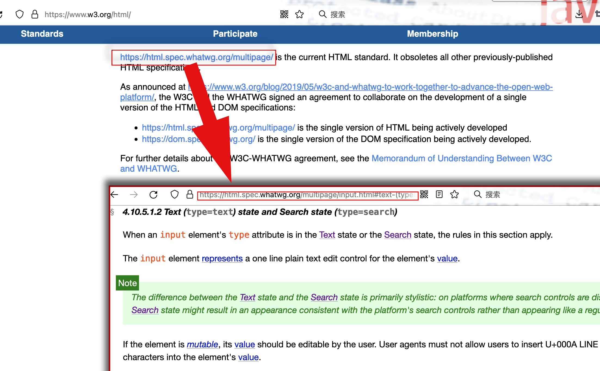
- 我们可以查找到这个文本框的标准写法
网页代码
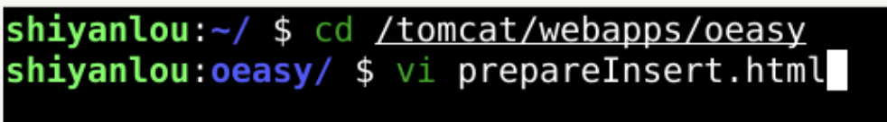
- 在oeasy的根下建立prepareInsert.html
<!doctype html>
<html lang="zh-CN">
<head>
<meta http-equiv="content-Type" content="text/html;charset=utf-8"/>
<title>prepareInsert</title>
</head>
<body>
<form action="./test" method="post">
用户名:<input name="username" type="text" />
<br/>
密码:<input name="password" type="text" />
<br/>
<input type="submit" value="提交" >
<input type="reset" value="重置" >
</form>
</body>
</html>
浏览网页
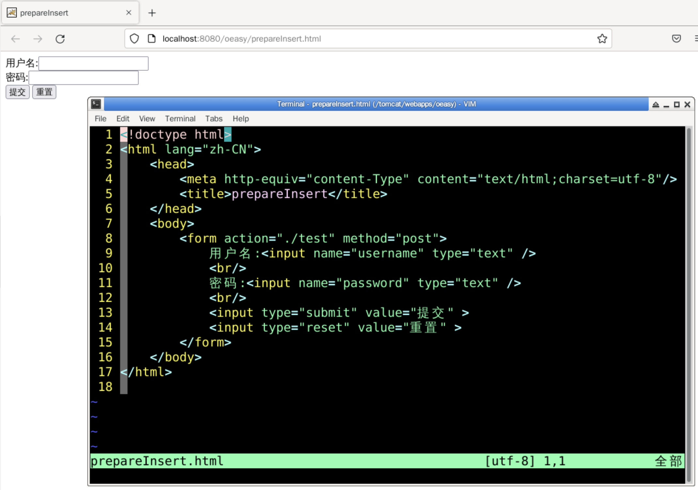
- 把表单form用post的方式提交到了./test这个url
- 那么我需要为这个url映射一个路由
准备环境
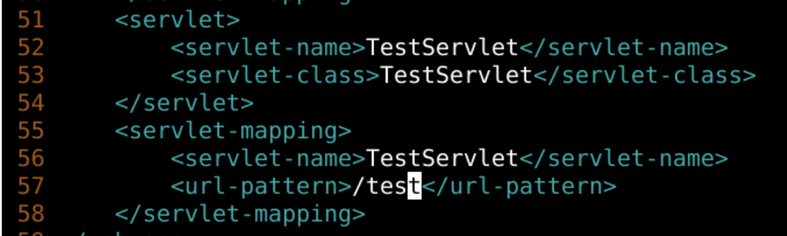
- 把路由配置好
- 然后复制出相应的java文件
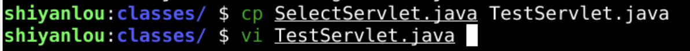
想象中的路由过程
- 通过/test路由到TestServlet.class
- 并且把接收到的数据输出到网页的响应(response)中
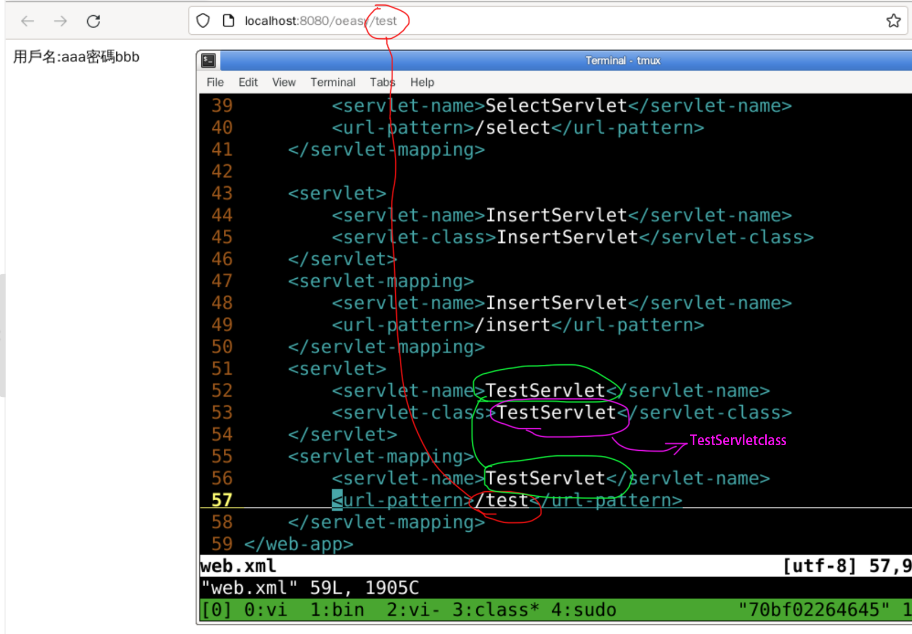
- 但是servlet如何接收到表单提交过来的数据呢?
- 去搜索一下
搜索
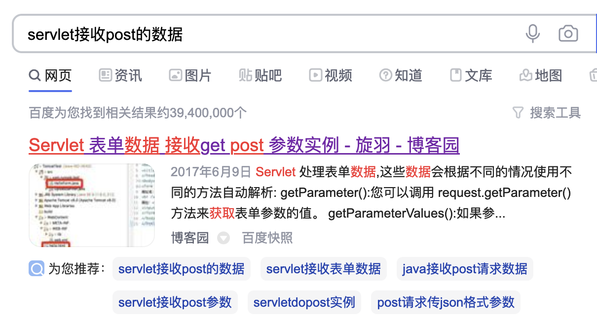
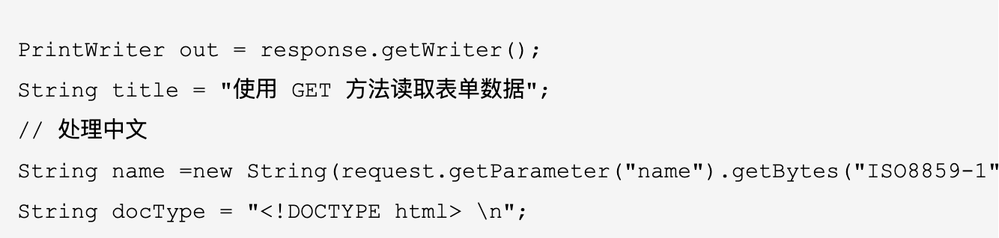
TestServlet.java
import java.io.IOException;
import java.io.PrintWriter;
import jakarta.servlet.ServletException;
import jakarta.servlet.http.HttpServlet;
import jakarta.servlet.http.HttpServletRequest;
import jakarta.servlet.http.HttpServletResponse;
public class TestServlet extends HttpServlet {
private static final long serialVersionUID = 1L;
public void doGet(HttpServletRequest request,
HttpServletResponse response)
throws IOException, ServletException
{
response.setContentType("text/html");
PrintWriter out = response.getWriter();
out.println("<!DOCTYPE html><html><body>");
String Username = request.getParameter("username");
String Password = request.getParameter("password");
out.print("用户名:"+Username);
System.out.print("用户名:"+Username);
out.print("密码"+Password);
out.println("</body></html>");
}
}
- 我们去浏览器
- 尝试提交表单
尝试提交
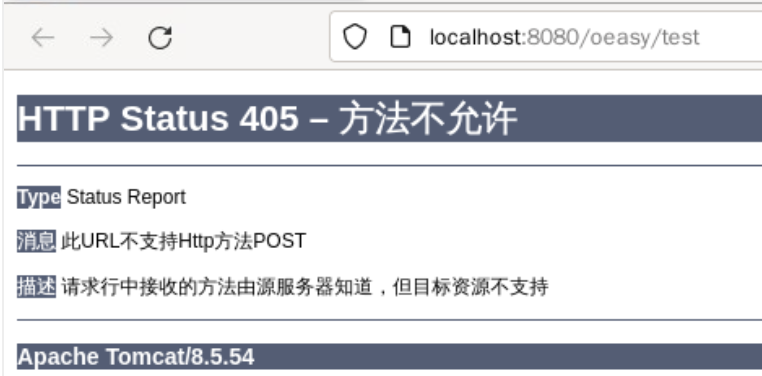
- 405 方法不允许
- 问题本身就是答案
搜索
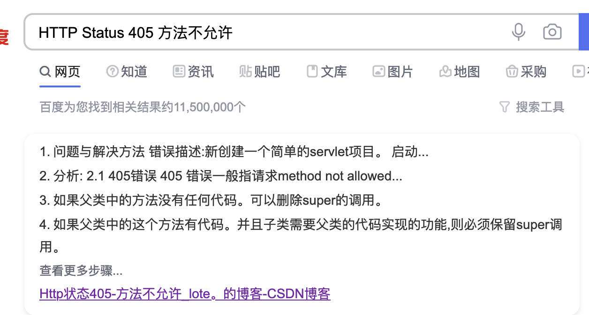
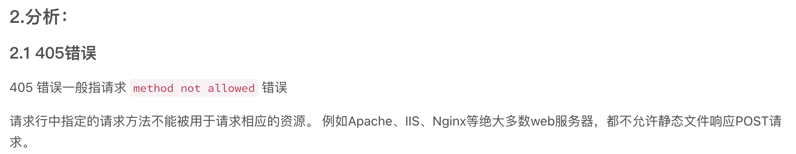
修改
- 注意我们把doGet函数名修改为了doPost
- 使用request.getParameter函数来接收post过来的数据
import java.io.IOException;
import java.io.PrintWriter;
import jakarta.servlet.ServletException;
import jakarta.servlet.http.HttpServlet;
import jakarta.servlet.http.HttpServletRequest;
import jakarta.servlet.http.HttpServletResponse;
public class TestServlet extends HttpServlet {
private static final long serialVersionUID = 1L;
public void doPost(HttpServletRequest request,
HttpServletResponse response)
throws IOException, ServletException
{
response.setContentType("text/html");
PrintWriter out = response.getWriter();
out.println("<!DOCTYPE html><html><body>");
String Username = request.getParameter("username");
String Password = request.getParameter("password");
out.print("用户名:"+Username);
System.out.print("用户名:"+Username);
out.print("密码"+Password);
out.println("</body></html>");
}
}
- 真的能把表单数据提交给servlet
- 并输出这些表单数据么?
- 试试！
提交
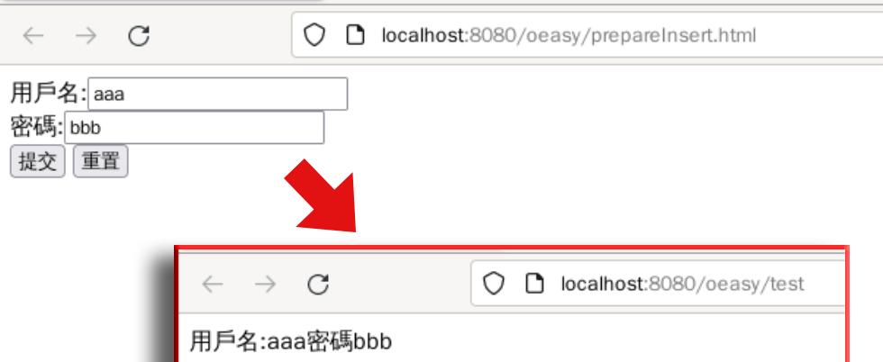
- 真的可以接受到浏览器提交上来的数据
- 可是什么是Get
- 什么又是Post呢？
Post数据
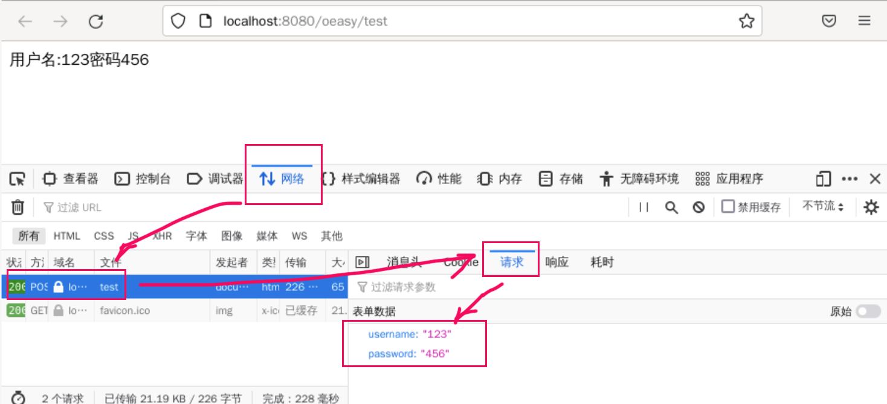
- 选中浏览器按下f12检查元素
- 在浏览器里面观察到提交方式的不同
- 这个不同其实主要指的是prepareInsert.html中
- form的method的不同
修改form的method
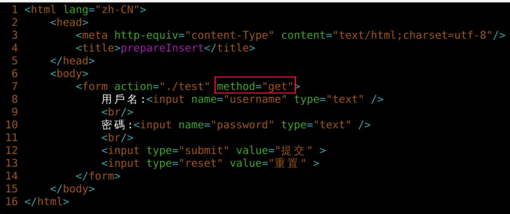
- 如果把form的method修改为get
- 会有什么不一样呢？
浏览器验证
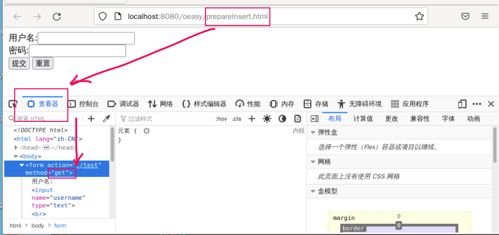
- 先右键查看源文件确认一把
- method="get"
- 图中红色部分
- 然后点击提交
提交之后
- 我们可以看到提交之后的地址
- 提交的数据都在后面明着写了出来
- 这就是get的提交方式
- 一般来说不是很安全
- 所以我们提交数据还是要使用post的方式
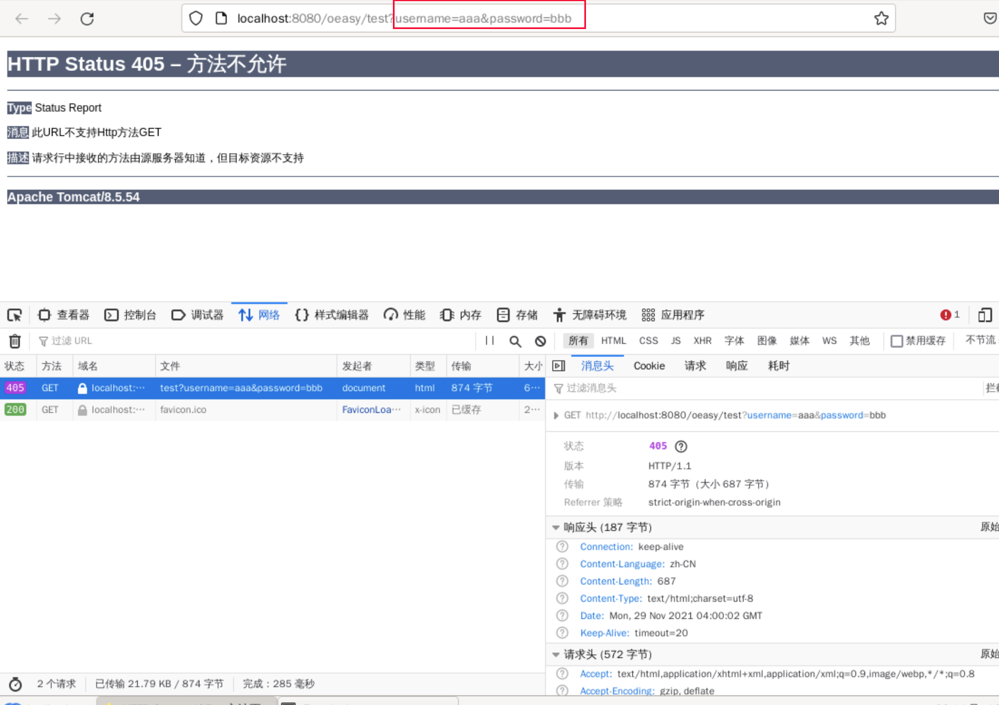
- 我们把method改回到"post"
- 但是中文可以提交么？
中文问题
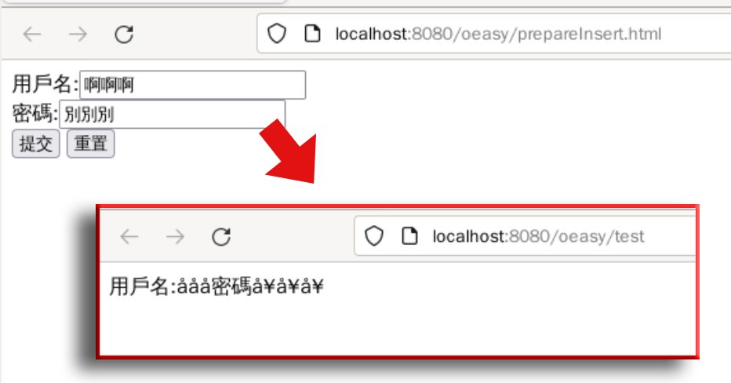
- tomcat9和以前的版本可能会出现了乱码问题
- 用户名、密码输出中文没有问题
- 说明问题不时出现在response的层面
- 那出现在什么位置呢？
- 这时要去看看日志里面如何报错
观察日志
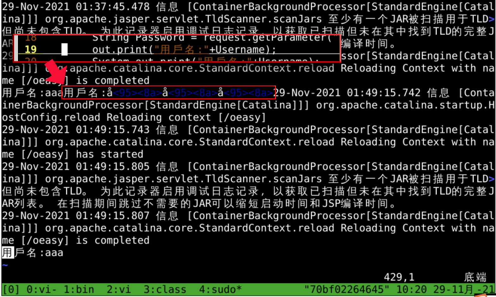
- 可以看到在得到Username的时候
- 这个Username就是乱码
- 乱码问题怎么解决？
- 搜索一下
搜索
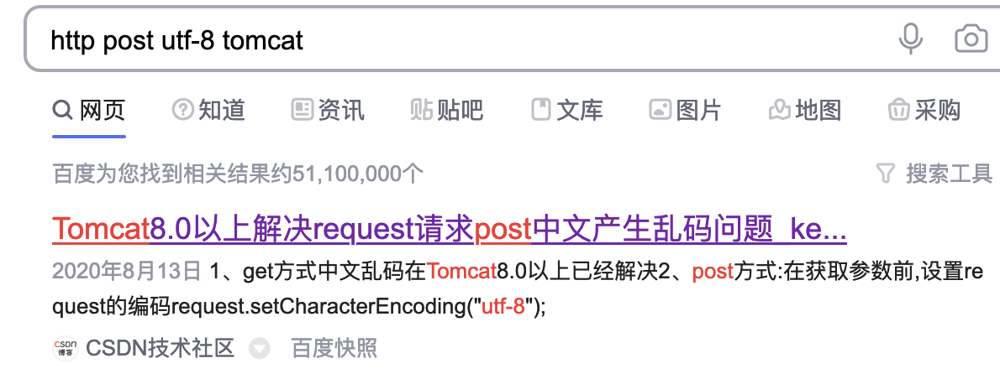
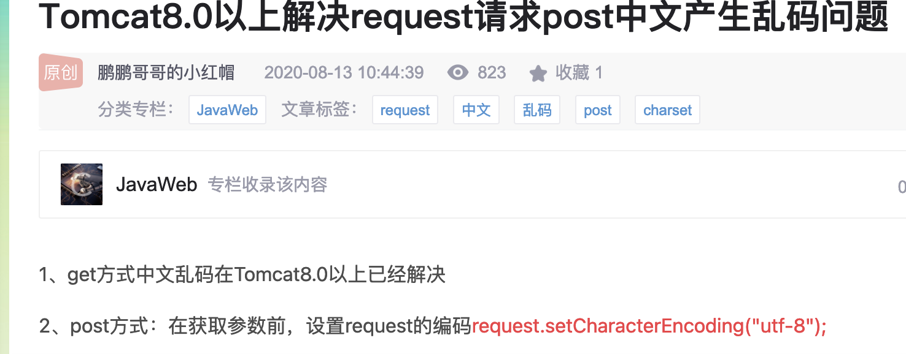
修正后的TestServlet.java
import java.io.IOException;
import java.io.PrintWriter;
import jakarta.servlet.ServletException;
import jakarta.servlet.http.HttpServlet;
import jakarta.servlet.http.HttpServletRequest;
import jakarta.servlet.http.HttpServletResponse;
public class TestServlet extends HttpServlet {
private static final long serialVersionUID = 1L;
public void doPost(HttpServletRequest request,
HttpServletResponse response)
throws IOException, ServletException
{
request.setCharacterEncoding("utf-8");
response.setContentType("text/html");
response.setCharacterEncoding("utf-8");
PrintWriter out = response.getWriter();
String Username = request.getParameter("username");
String Password = request.getParameter("password");
out.print("用户名:"+Username);
System.out.print("用户名:"+Username);
}
}
- 其实主要是函数体里面第三句
- response.setCharacterEncoding("utf-8");
- 中文问题解决了
- 如果我想要post和get都能处理应该怎么办呢？
回忆

- 例程里面把get和post都处理了
- doPost是通过调用doGet实现的
照猫画虎
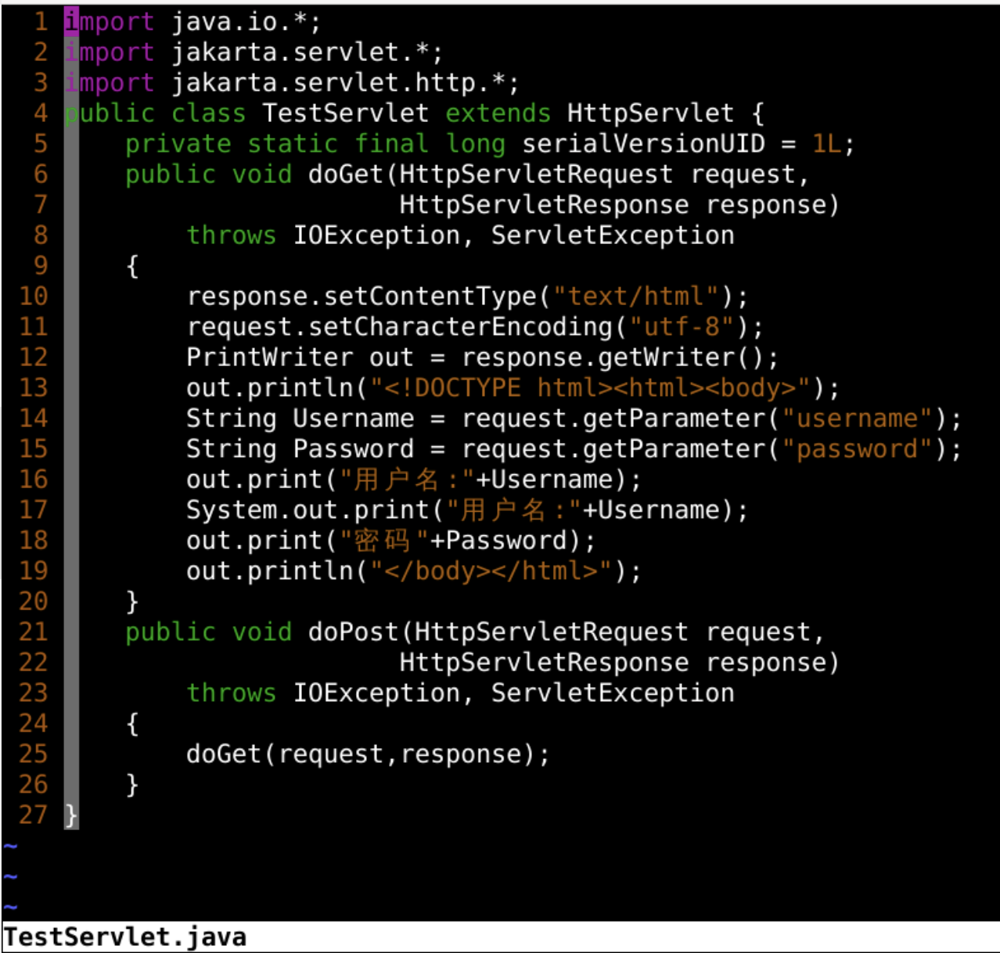
- 让我们总结一下
总结
- 我们这次研究了文本框提交表单
- 提交表单有两种方式
- Get 直接写在地址栏 简单明了
- Post 隐藏起来 保密性强
- 提交的表单要有一个接收的url
- 这个url对应的servlet可以处理相关数据
- 可以插入数据到数据库
- 插入数据到数据库前面做过
- 现在就是要把接收表单数据和插入数据库记录整合起来
- 把表单接收到的数据
- 插入到数据库的表中
- 添加一条记录
- 如何整合呢？🤔
- 下次再说！👋